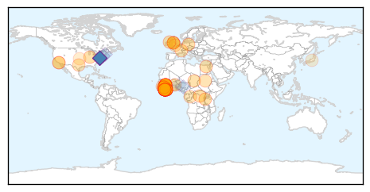
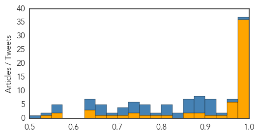

Ebola
30-Day Web Trend
0 alerts, 0 warnings

30-Day Twitter Trend
7 alerts, 17 warnings

Article Locations
Article Confidences
Top Articles:
- 1.000
- Liberia Has First Ebola Fatality in Months as Outbreak Crops Back Up
- 1.000
- Boy dies of Ebola in Liberia, first fatality in months
- 1.000
- Deadly Ebola virus has returned to Liberia and nobody understands why
- 1.000
- Ebola reappears in Liberia, leaving the question: Why?
- 1.000
- Liberia under watch as Ebola makes third appearance
- 1.000
- Boy dies of Ebola in Liberia, first fatality in months
- 1.000
- Liberia Confirms 15-year-old Boy Died from Ebola, First Death in Months : News : News Every Day
- 1.000
- Boy Dies Of Ebola In Liberia, First Fatality In Months
- 1.000
- Ebola – The Wind That Blows; Will It Stop?
- 1.000
- Liberia records 1st Ebola death since July - KSBY.com
- 1.000
- Puzzling Ebola Death Shows How Little We Know About The Virus
- 1.000
- Boy dies of Ebola in Liberia, first fatality in months
- 1.000
- Ebola Kills First Victim in Re-emergence
- 1.000
- Teenage boy dies of Ebola in Liberia
- 1.000
- Ebola is Back in Liberia: Why Are We Struggling to Eradicate It?
- 1.000
- Ebola Re-Emerge in Liberia; CDC Investigates Return of Disease
- 1.000
- Sahara Reporters
- 1.000
- Boy Dies Of Ebola In Liberia
- 1.000
- Liberia Records 1st Ebola Death Since July
- 0.999
- Liberia records first Ebola death since July
- 0.999
- First Ebola Death Recorded In Liberia Since June
- 0.999
- Why Experts Blame WHO For The 'Needless' Deaths Caused By Ebola Virus In West Africa
- 0.999
- Boy (15) is first Ebola fatality in Liberia since July
- 0.999
- Liberia Records Another Ebola Case As 15 Year-Old-Boy Dies From The Virus
- 0.999
- Teenager dies as Ebola returns to Liberia: official
- 0.999
- Amid Failure and Chaos, an Ebola Vaccine
- 0.999
- Ebola crisis: World Health Organization response criticised in damning report
- 0.999
- Liberia Sees First Ebola Death Since July -- NYMag
- 0.998
- Ebola crisis: Liberia boy dies after fresh cases
- 0.997
- In the World
- 0.997
- Liberia monitors over 150 Ebola contacts
- 0.997
- Liberia records first Ebola death since July
- 0.997
- Ebola Kills 15-Year-Old Boy in Liberia
- 0.994
- An indictment of Ebola response
- 0.992
- Liberia just had its first Ebola death since July
- 0.980
- Health Highlights: Nov. 24, 2015
- 0.973
- Sierra Leone Embassy in Germany Observes prayers for Ebola Victims
- 0.966
- LIBERIA: Health Ministry Identifies 139 Contacts In Latest Ebola Case
- 0.964
- House of Chiefs strategizes for prevention of Ebola
- 0.964
- Ebola Kills 15-Year-Old Boy in Liberia
- 0.960
- Sierra Leone: Post-Ebola assistance to the vulnerable underway
- 0.955
- WHO Director-General addresses Regional Committee for Africa
- 0.940
- Ebola will always return unless we develop the tools to end it
- 0.917
- Boy dies of Ebola in Liberia, first such fatality in months
- 0.896
- Boy dies of Ebola in Liberia in first such fatality in months
- 0.893
- Theft of protective health suits from Paris hospital raises possibility terror groups could launch chemical, bacteriological warfare
- 0.872
- 'This virus is tearing people apart': Dallas Ebola victim's relatives shunned as ...
- 0.866
- News in Brief 24 November 2015 (AM)
- 0.802
- Vintage photos show the terrifying first expeditions into the Congo to track down Ebola
- 0.780
- Samuel Boland, who worked on Ebola front lines, wins Marshall Scholarship
Showing top 50 articles...
Top Tweets:
- 0.998
- US hospitals are giving people FREE Ebola virus vaccines too free ebola
- 0.996
- FREE Ebola Virus Vaccines US hospitals give people FREE Ebola details https://t.co/btsQVaaZ4Q Hannity
- 0.992
- Ebola: campagne contre l'essai vaccinal au Cameroun - https://t.co/TzvUIbtBs3 ebola
- 0.991
- Ebola - 153 Contacts Under Surveillance - Three Confirmed Cases - https://t.co/odlAdaqDHB ebola
- 0.990
- Ebola Outbreak Shows 'Major Reforms' Needed - https://t.co/Xt3Q8Bojj3 ebola
- 0.986
- BREAKING EBOLA! 3 People have Ebola hundreds quarantined https://t.co/snnsEct17a
- 0.986
- BREAKING EBOLA! 3 People have Ebola hundreds quarantined https://t.co/snnsEct17a
- 0.986
- BREAKING EBOLA! 3 People have Ebola hundreds quarantined https://t.co/snnsEct17a
- 0.986
- BREAKING EBOLA! 3 People have Ebola hundreds quarantined https://t.co/snnsEct17a
- 0.986
- BREAKING EBOLA! 3 People have Ebola hundreds quarantined https://t.co/snnsEct17a
- 0.986
- BREAKING EBOLA! 3 People have Ebola hundreds quarantined https://t.co/snnsEct17a …
- 0.984
- BREAKING EBOLA! 3 People have Ebola hundreds quarantined https://t.co/snnsEct17a ebola BlackFridayIn3Words https://t.co/0B7dV2LILE
- 0.978
- Breaking! Ebola is Back! - https://t.co/Ckms6Y7TBx ebola
- 0.974
- Puzzling Ebola Death Shows How Little We Know About The Virus - NPR https://t.co/2giUCKeLrQ ebola EVD
- 0.974
- Ebola global response was 'too slow', say health experts - https://t.co/sdcwhj9ARa ebola
- 0.971
- BREAKING EBOLA! 3 People have Ebola hundreds quarantined https://t.co/snnsEct17a refugeeswelcome refugees refugeecrisis NoRefugees
- 0.970
- @BretBaier Ebola 3 people diagnosed with Ebola this week several hundred quarantined https://t.co/eVHW7jqA6E
- 0.969
- Ebola crisis: Liberia boy dies after fresh cases - BBC News https://t.co/GD5VzHyC6V ebola EVD
- 0.966
- House of Chiefs strategizes for prevention of Ebola - GhanaWeb https://t.co/3QHyySu0wS ebola EVD
- 0.965
- Teenage Boy Dies Of Ebola In Liberia After Months Without New Cases - https://t.co/ZsSp9zurkc ebola
- 0.961
- Boy dies of Ebola in Liberia, first fatality in months - Reuters https://t.co/USYpqrQOPN ebola EVD
- 0.960
- Boy dies of Ebola in Liberia, first such fatality in months - Reuters https://t.co/QtKvXGyF3g ebola EVD
- 0.959
- Global health experts accuse WHO of 'egregious failure' on Ebola - https://t.co/63BTpHsLCN ebola
- 0.958
- Ebola reappears in Liberia, leaving the question - https://t.co/qLY1UKrFMy ebola
- 0.958
- Ebola reappears in Liberia, leaving the question - https://t.co/aQYTEBkSJb ebola
- 0.941
- BREAKING EBOLA KILLS teenager TODAY! hundreds quarantined https://t.co/vBbeQKC50z ThanksgivingWithBlackFamilies Ebola
- 0.936
- Boy, 15, dies of Ebola in Liberia - The Advertiser https://t.co/yBVFHoL2cr ebola EVD
- 0.930
- 15-yr-old died of Ebola in Liberia; this is the first virus-related fatality since country was declared Ebola-free https://t.co/h4Oj5SYFUW
- 0.924
- US officials headed to Liberia to seek cause of latest Ebola cases - https://t.co/fuBwK5efKT ebola
- 0.909
- BREAKING EBOLA! 3 People have Ebola hundreds quarantined https://t.co/snnsEct17a KellyFile https://t.co/7qs1rvlCir
- 0.909
- BREAKING EBOLA! 3 People have Ebola hundreds quarantined https://t.co/snnsEct17a … https://t.co/vAO2J2KQXy
- 0.909
- BREAKING EBOLA! 3 People have Ebola hundreds quarantined https://t.co/snnsEct17a … https://t.co/sZVFgeM0Q5
- 0.909
- BREAKING EBOLA! 3 People have Ebola hundreds quarantined https://t.co/snnsEct17a … https://t.co/fJfJuzqDZy
- 0.909
- BREAKING EBOLA! 3 People have Ebola hundreds quarantined https://t.co/snnsEct17a … https://t.co/bw7QudTnzb
- 0.909
- BREAKING EBOLA! 3 People have Ebola hundreds quarantined https://t.co/snnsEct17a … https://t.co/R1EAeLwXkb
- 0.909
- BREAKING EBOLA! 3 People have Ebola hundreds quarantined https://t.co/snnsEct17a … https://t.co/Lzb5adXeNt
- 0.909
- BREAKING EBOLA! 3 People have Ebola hundreds quarantined https://t.co/snnsEct17a … https://t.co/JL6kbIZZvE
- 0.909
- BREAKING EBOLA! 3 People have Ebola hundreds quarantined https://t.co/snnsEct17a … https://t.co/AmJxGLfJwM
- 0.909
- BREAKING EBOLA! 3 People have Ebola hundreds quarantined https://t.co/snnsEct17a https://t.co/htMThpdWJY
- 0.909
- BREAKING EBOLA! 3 People have Ebola hundreds quarantined https://t.co/snnsEct17a https://t.co/ajjcYLFGbK
- 0.909
- BREAKING EBOLA! 3 People have Ebola hundreds quarantined https://t.co/snnsEct17a https://t.co/afQAMG5tP8
- 0.909
- BREAKING EBOLA! 3 People have Ebola hundreds quarantined https://t.co/snnsEct17a https://t.co/RT5gjzzrkB
- 0.909
- BREAKING EBOLA! 3 People have Ebola hundreds quarantined https://t.co/snnsEct17a https://t.co/NpstfHEOGt
- 0.909
- BREAKING EBOLA! 3 People have Ebola hundreds quarantined https://t.co/snnsEct17a https://t.co/NStzYWpHd8
- 0.909
- BREAKING EBOLA! 3 People have Ebola hundreds quarantined https://t.co/snnsEct17a https://t.co/KNVE7U8t4p
- 0.909
- BREAKING EBOLA! 3 People have Ebola hundreds quarantined https://t.co/snnsEct17a https://t.co/JfuSRKM9MX
- 0.909
- BREAKING EBOLA! 3 People have Ebola hundreds quarantined https://t.co/snnsEct17a https://t.co/IRMElzac78
- 0.909
- BREAKING EBOLA! 3 People have Ebola hundreds quarantined https://t.co/snnsEct17a … https://t.co/hr1bTfotL3
- 0.909
- @DonnySmith557 BREAKING EBOLA! 3 People have Ebola hundreds quarantined https://t.co/snnsEct17a https://t.co/l6P4itr044
- 0.909
- @CallyGingrich BREAKING EBOLA! 3 People have Ebola hundreds quarantined https://t.co/snnsEct17a https://t.co/2hQwOYRoXY
Showing top 50 tweets...
Unknown
30-Day Web Trend
0 alerts, 0 warnings

30-Day Twitter Trend
0 alerts, 0 warnings

Article Locations

Article Confidences

Top Articles:
- 0.988
- Zika virus: Public health alerts in South America and Caribbean as fears illness may cause birth deformities -- Health & Wellness -- Sott.net
- 0.951
- State officials: 17 confirmed cases of Salmonella stemming from cucumbers, 7 connected to daycare center
- 0.941
- 5 Utah E. coli cases linked to Costco chicken salad, health officials say
- 0.933
- Chipotle E. Coli Continues to Spread and Sicken Customers in More States
- 0.900
- Cases of E. coli traced to Costco chicken salad in Utah
- 0.891
- Agency: 19 people ill in E. coli outbreak tied to Costco
- 0.891
- 19 people ill in E. coli outbreak tied to Costco
- 0.885
- Hannibal hotel closes after Legionnaires' bacteria found
- 0.885
- Hannibal hotel closes after Legionnaires' bacteria found
- 0.866
- CLIMATE BRIEF-Businesses outline proposals for Paris climate deal
- 0.866
- Australia calls for greater intel sharing in Asia to stop Paris-style attack
- 0.865
- Costco Chicken Salad Tied To E. Coli Outbreak Sickening 19 People In 7 States « CBS Sacramento
- 0.856
- New disease transmitted by insects spreads in Guinea
- 0.847
- New disease transmitted by insects spreads in Guinea - Xinhua
- 0.816
- 'More money needed' to beat TB, health agencies warn
- 0.801
- Costco pulls chicken salad off shelves due to E. coli
- 0.792
- Legionella bacteria leads to partial closure of hotel in Hannibal
- 0.788
- Is it dangerous to eat at Chipotle after E. coli outbreak?
- 0.772
- NHS failures mean thousands suffer or die from severe sepsis each year
- 0.761
- Farm Recalls Produce Used In Costco Chicken Linked To E. Coli Outbreak
- 0.745
- Legionnaire’s lingers at Bay Pines VA, but experts see little danger
- 0.743
- Column: Time for White House to step up on TB
- 0.741
- Acute hospitals should be for acute cases only
- 0.716
- Turkey shoots down Russian fighter jet 'near Syrian border'
- 0.712
- How to avoid colds and flu when you fly
- 0.682
- Experts Say Kissing Bug Poses Little Threat To Georgians
- 0.676
- Hundreds admitted to Yeovil District Hospital with symptoms of malnutrition, figures reveal
- 0.672
- 5 E. coli cases in Utah linked to Costco chicken salad
- 0.669
- Donald Trump, Ben Carson claim American Muslims cheered 9/11 attacks
- 0.663
- Canada to announce plan to resettle 25,000 refugees
- 0.654
- Nurses risk missing sepsis by not recording vital signs
- 0.652
- Vibrio bacteria has killed 13 this year in Florida: What foods to avoid
- 0.647
- Alarm over drug-resistant TB on Australia's border
- 0.642
- Turkey reveals new cabinet with Erdogan's son-in-law in key post
- 0.642
- Paris attacks organiser 'targeted business district' in bomb plot
- 0.642
- Man who lent flat to Paris attacker goes before judge
- 0.642
- Foo Fighters release free EP dedicated to Paris, hint at hiatus
- 0.642
- Are French civil liberties another victim of Paris attacks?
- 0.642
- Tunisia declares state of emergency after deadly bus blast
- 0.640
- Costco’s chicken salad linked to case of E. coli in Washington, state says
- 0.637
- Use of antivirals in retrovirus-infected cats
- 0.630
- CDC announces first Eastern Equine Encephalitis death in Maine
- 0.625
- Ready to travel? 7 tips to prevent ticks on Fido
- 0.624
- Camden-Narellan Advertiser
- 0.622
- Feds Investigating Link Between Costco Chicken Salad And Ecoli Cases « CBS San Francisco
- 0.606
- Deadly 'kissing bug' spreads; bites you as you sleep
- 0.602
- Eight bat attacks prompt health warning for Hunter residents
- 0.601
- FDA targets inaccurate medical tests, citing dangers and costs
- 0.592
- Sudafed Sinus + Allergy & Pain Relief Tablets (Pseudoephedrine hydrochloride, Paracetamol, Triprolidine hydrochloride) Drug
- 0.592
- 25 Cases of Illness Due to Salmonella Outbreak Reported in Washington
Showing top 50 articles...
Top Tweets:
- 0.734
- RT: El problema de este sistema es que no se basa en el bienestar del ser humano. Se basa en la plata.
- 0.734
- Flu vaccines have a very good safety record. Serious problems from Flu vaccine are very rare. For more info, visit: https://t.co/GrVkkRUWCg
- 0.700
- RT: Estamos a unos días de armar el arbolito, de cobrar el aguinaldo, de patinarlo en 5 días, de Navidad, Año Nuevo, famili…
- 0.604
- RT: Hay que volver a los desayunos en la cama. Tomar algo caliente mientras vemos una peli, un día de frío.
- 0.541
- Want to avoid the flu? Or ease flu symptoms? @USAToday shares helpful videos with answers to these questions https://t.co/YfIRLVqsQD
- 0.521
- RT: Le BCEN rejette la requête de Maryse Narcisse lui demandant d'exclure Jovenel Moise de la course électorale Haiti